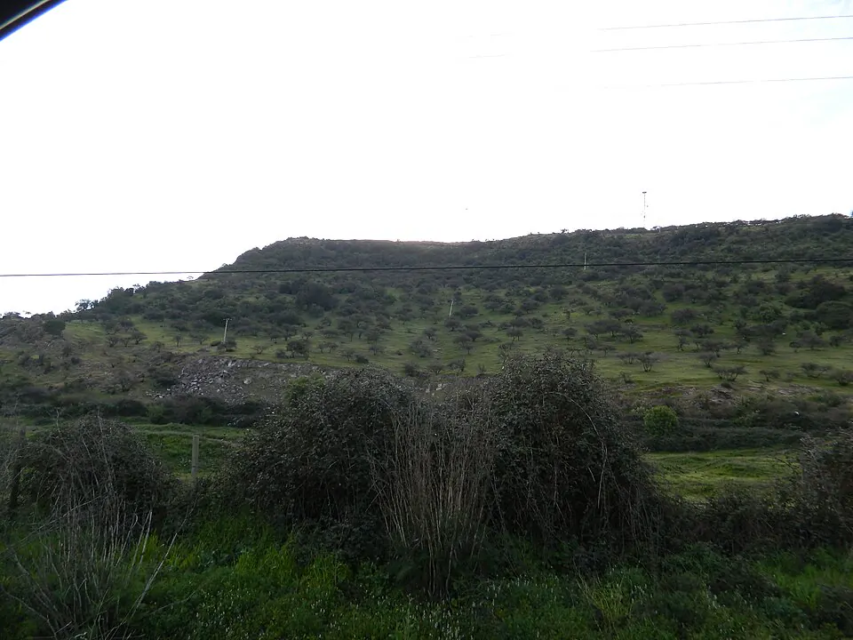

Expansión inca en Chile

El Imperio inca, o Tawantinsuyu, fue el mayor Estado de la América prehispánica. Según los cronistas, su expansión hacia el actual Chile, dentro de la región del Collasuyu, fue obra del inca Túpac Yupanqui en la segunda mitad del siglo XV. Algunas dataciones arqueológicas sugieren que la presencia inca en el norte comenzó décadas antes, por lo que la fecha sigue en debate.
Los incas incorporaron a pueblos como el aymara, el lickanantay y el diaguita, además de comunidades del valle central. Gobernaron a través de autoridades locales, exigieron tributo en trabajo y productos, trasladaron poblaciones (mitimaes) y explotaron minas, sobre todo de oro. Su obra más visible es el Qhapaq Ñan, el camino inca, declarado Patrimonio Mundial en 2014. También levantaron fortalezas, como el pucará de Chena, y santuarios de altura, como el del cerro El Plomo, donde en 1954 se halló el cuerpo de un niño ofrendado en la ceremonia de la capacocha.
El límite sur del dominio inca se situó en torno al río Maule, donde los pueblos locales resistieron su avance. Su huella perduró en caminos, nombres de lugares y en la lengua quechua, hablada hoy por el Pueblo Quechua.
Versión para niños
Los incas tenían un enorme imperio en los Andes, con capital en la ciudad de Cusco, en el actual Perú. Lo llamaban Tawantinsuyu. Hace unos 550 años, sus ejércitos y funcionarios llegaron al territorio que hoy es Chile. Pueblos como los diaguitas quedaron bajo su dominio y debían trabajar y entregar productos. Los incas construyeron caminos, lugares de descanso y fortalezas. Cerca del río Maule, los pueblos del sur resistieron y los incas no siguieron avanzando.
Para maestros
Nivel sugerido: 4° básico
Objetivo: Comprender cómo se organizaba el Imperio inca y qué huellas dejó en el territorio de Chile. La fecha lleva "c." porque los cronistas no entregan años exactos y algunas dataciones arqueológicas sugieren una llegada anterior a 1470.
Preguntas para la clase:
- ¿Para qué le servían al Imperio inca sus caminos?
- ¿Cómo cambió la vida de los pueblos del norte de Chile al quedar bajo dominio inca?
- ¿Por qué crees que los incas no avanzaron más allá del río Maule?
Actividad (20–30 min): Los estudiantes reciben un mapa mudo de Sudamérica y trazan el Qhapaq Ñan desde Cusco hasta Chile central, marcando el Maule como límite sur. Luego, en grupos, fabrican un quipu sencillo con lanas y nudos para registrar un dato de su curso, como el número de estudiantes.
Fuentes sugeridas: Museo Chileno de Arte Precolombino; Memoria Chilena; Museo Histórico Nacional.
Objetivos de Aprendizaje (Currículum Nacional)
- 4° básico · HI04 OA 03 Describir la civilización inca, considerando ubicación geográfica, organización política, sistema de caminos y correos
- 7° básico · HI07 OA 14 Caracterizar el Imperio Inca, y analizar los factores que posibilitaron la dominación y unidad del Imperio … sometimiento de pueblos y lengua oficial
Revisión humana pendiente. Cómo se revisa · Reportar un error
Cómo citar: Historia de Chile. (2026). Expansión inca en Chile. En Historia de Chile: atlas y línea de tiempo. https://moises-salgado.github.io/historia-de-chile/momento/expansion-inca-en-chile.html